How Much in a Bottle? How Much in a Bag?
11
How Much in a Bottle? How Much in a Bag?
159


How Much in a Bottle? How Much in a Bag?
11
How Much in a Bottle? How Much in a Bag?
159


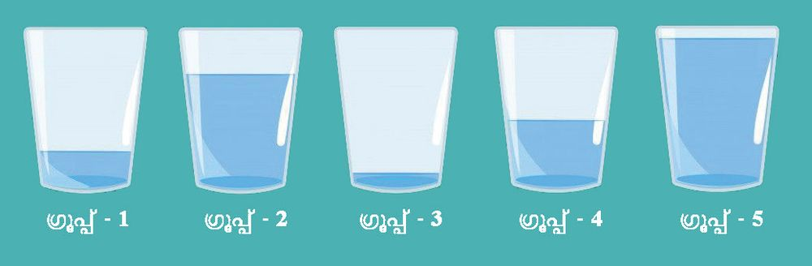
Mathematics Standard - III
Water Relay See the picture on page 159. The group which won.
Let us also play this game.
Leju's class played this game in groups. Water collected by each group was poured into the glasses. See the pictures:
Which group of Leju's class won?
Water Bell Now fill up the water bottles
Didn't you hear the water bell? Everyone, drink some water now.
Whose water bottle can contain the most amount of water? How many glasses of water can it hold?
160


How Much in a Bottle? How Much in a Bag?
How much in the bottle?
• Which bottle can hold the most amount of water? Draw a circle around it. • Which bottle would hold the least? Draw a square around it.
Mom said my bottle can hold one litre of water
How about measuring the water to see if it's actually a litre?
Things We buy What items in your home are bought in quantities of 1 litre?
•
•
•
•
•
•
161

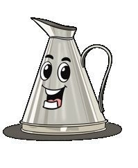
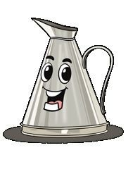


Mathematics Standard - III
Let's Measure and Fill Use measuring jars to see how much water your bottle can hold.
I don't have a measuring jar
Let's Make Measuring Jars Make your own measuring jars of 1 litre, 500 millilitres and 250 millilitres, out of used bottles. Millilitre is a Mark 100 millilitres and 50 millilitres smaller measure than a litre also on the 200 millilitre vessel. What are the things we buy in quantities less than a litre? Item Milk
Measure 500 millilitres
162
We can write millilitres as ml and litre as l

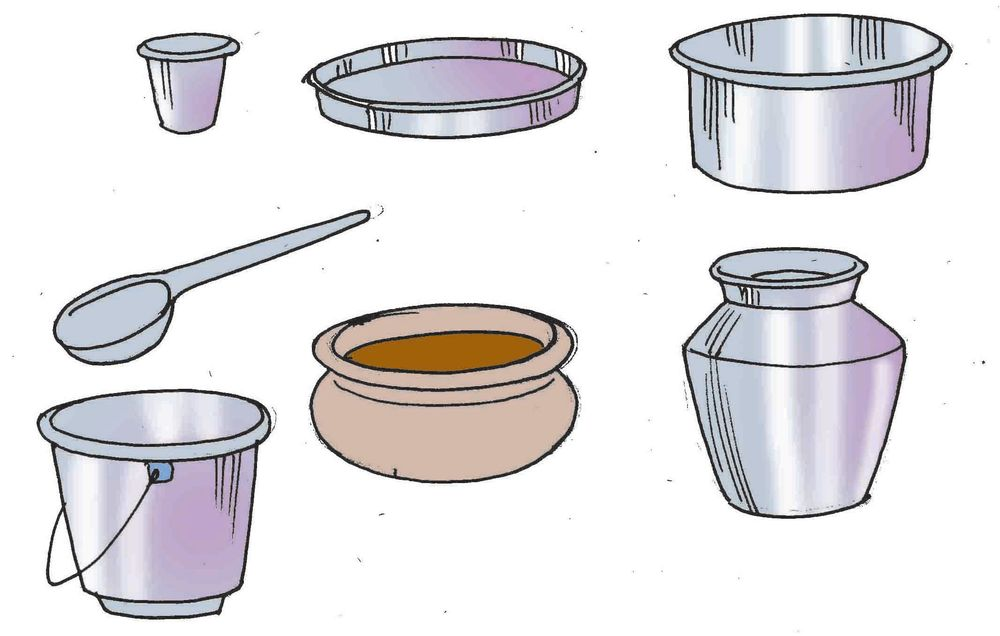
How Much in a Bottle? How Much in a Bag?
How Much Water? How many glasses of water do you drink per day? Measure and write Guess how much water the various vessels in your home can hold. Then actually measure them and write.
Vessel
Guess
Tea glass Cup Tea pot Bucket Mug Rice pot
163
Actual measure

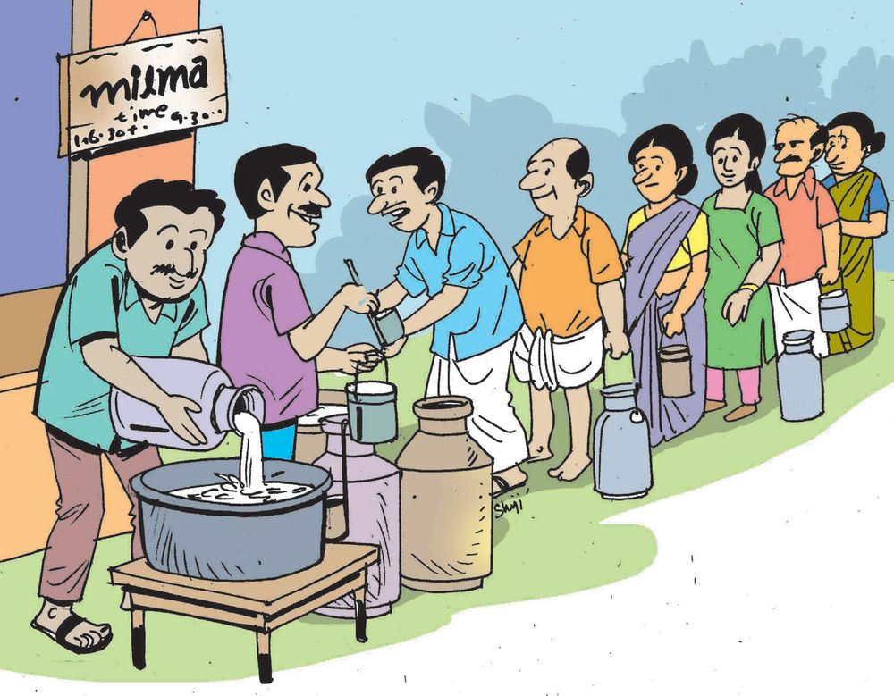
Mathematics Standard - III
Milk Society
Leju's father sold milk to the society. It was measured 2 times with a 2 litre vessel and once with a 1 litre vessel. How many litres of milk did Leju's father sell ?
• 2 litre can filled twice gives
............... litre
• 1 litre can filled once makes
............... litre
• Total quantity of milk
............... litre
After Leju's father, the next in line was Janaki Aunt. The milk was measured using a 1 litre can filled 3 times and a 200 millilitre can filled two times. How much milk did Janaki Aunt sell ?
.............. litre .............. millilitre 164

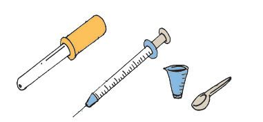
How Much in a Bottle? How Much in a Bag?
• 1 litre can filled 3 times makes
.................. litre
• 200 millilitre can filled 2 times gives
.................... ml
• Total
........... l ........... ml
Basheer came to buy milk for his teashop. He was given 3 litres of the milk brought by Leju's father. How much of it is left?
Small Measures Write some instances of using the things shown in the picture:
• Measuring medicine
•
• Adding salt to curry
•
•
•
•
•
How much medicine can the small spoon hold? Measure and write How much water can a bottle cap hold? Measure and write.
165

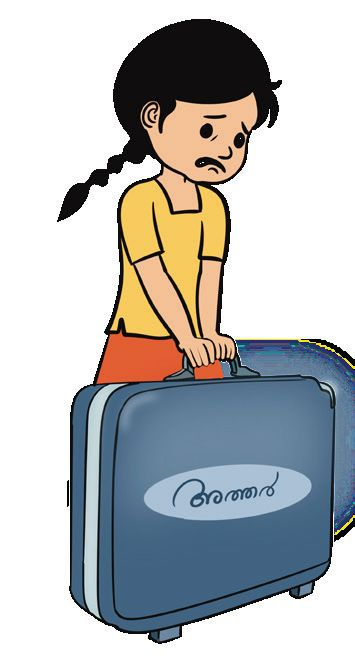

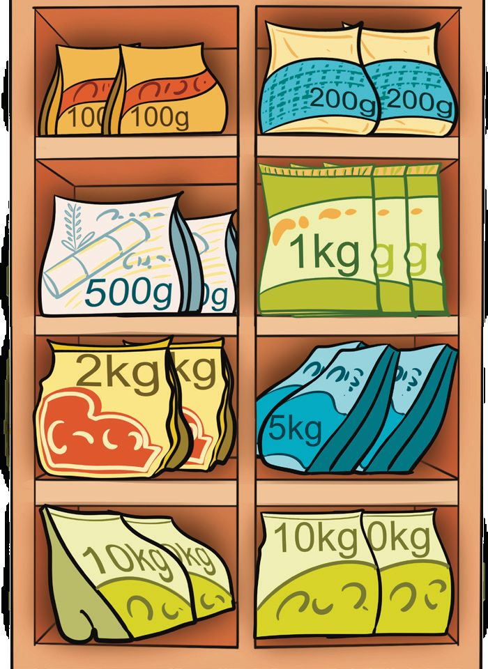
Mathematics Standard - III
Attar sales Leju's father sells attar also. He buys attar from wholesale merchants and sells it in 5 millilitre bottles. How much attar is needed to fill 20 such bottles?
How many bottles can be filled with 20 millilitres of attar?
Supermarket How heavy it is! I can't lift it!
Wait, dear.! I will take it
Leju's father supplies attar to the supermarket. Leju also went there with his father. What things are bought in your home, which weigh one kilogram?
• •
Must buy a kilogram of sugar
• • • 166

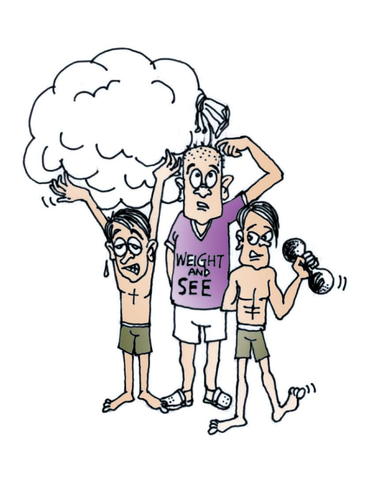
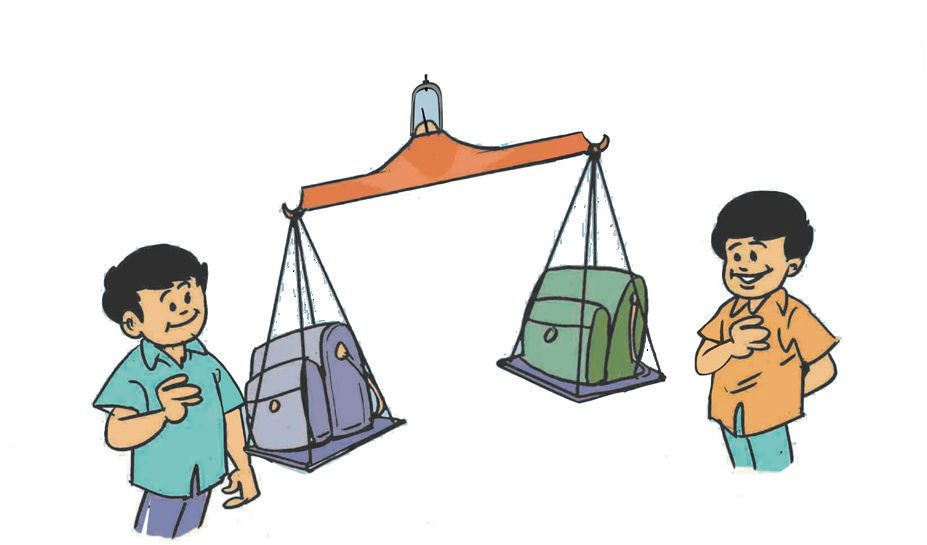


How Much in a Bottle? How Much in a Bag?
These are the things Leju and his father bought from the supermarket: Rice - 10 kilogram Atta - 1 kilogram Rawa - 2 kilogram
Sugar Rice flour Green gram -
I'll carry the things
1 kilogram 2 kilogram 1 kilogram
Let's get an auto
Total weight of the thing bought from the super market .................. kilogram
So heavey!
So... which is actually What things in the classroom can heavier? Cotton or you lift yourself? What are the iron? things you cannot lift? Things I can lift
My bag is heavier!
No! Mine is!
167
Things I can't lift


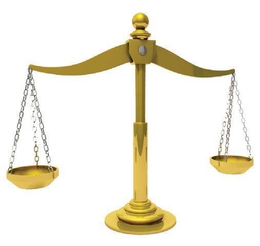
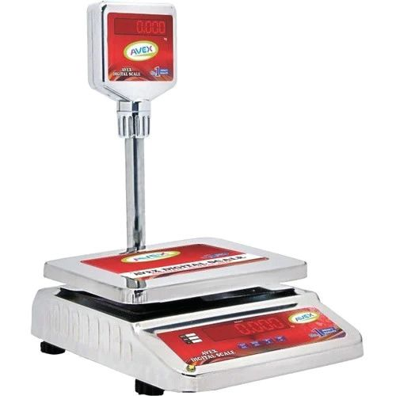

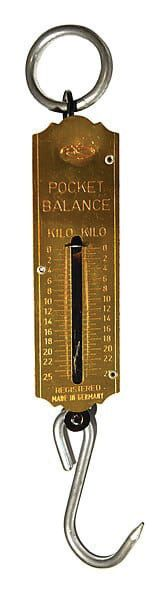
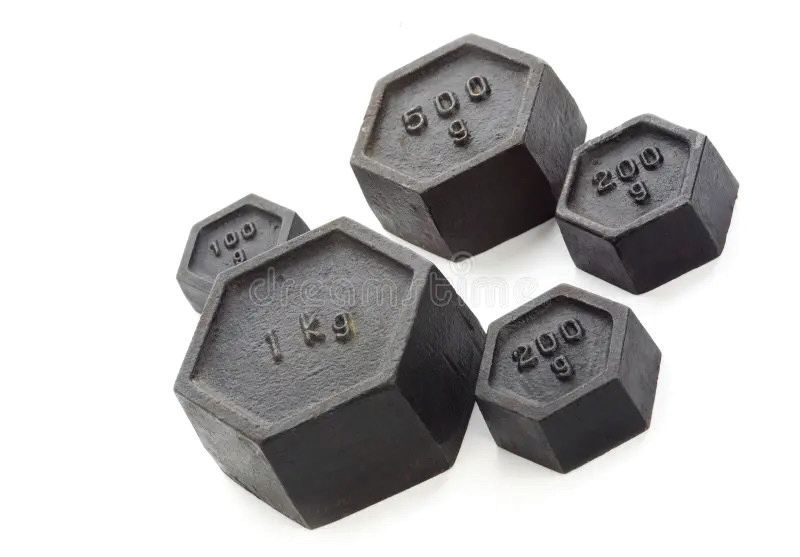
Mathematics Standard - III
How Many Instruments to Weigh!
Weight is measured in kilogram or gram
Gram is a smaller measure than kilogram
Let's Weigh! Weight of My bag Guess
Actual
Weight of Friend's bag Guess
My weight Guess
Actual
Actual
Friend's weight Guess
168
Actual

How Much in a Bottle? How Much in a Bag?
Health Chart
Get these details about your classmates and complete the table: Boys Name
Girls
Height cm
Age
Weight kg
Name
Height cm
Age
Weight kg
The table below shows the ideal height and weight for children of 7, 8 and 9 years, according to the chart in Family Health Centre Boys
Girls
Age
Height cm
Weight kg
Age
Height cm
Weight kg
7
122
23
7
121
22
8
127
26
8
126
25
9
133
28
9
133
28
Compare the heights and weights of your friends with the chart above and write a note.
169


Mathematics Standard - III
Food Kit
Punchiri club near Leju's home distributed food kits for Onam. The table shows the items in the kit and their weights.
Tea
100 g
Turmeric powder
100 g
Sugar
1 kg
Coconut oil
1 kg
Cashew nuts
40 g
Raw rice
500 g
Ghee
50 g
Green gram
500 g
Cardamom
10 g
Pigeon pea
200 g
Banana chips (Jaggery) 50 g
Salt
1 kg
Chilly powder
Banana chips
250 g
500 g
• How many things in the kit weigh 1 kilogram ? What is their total weight ?
170

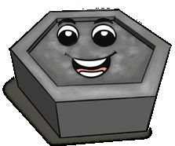

How Much in a Bottle? How Much in a Bag?
• Which things in the kit weigh less than 1 kilogram ?
a rter of a u q ams = ilogram k 250 gr am kilogr a f l a s h ms = ree quarter a r g 0 th 50 ams = f a kilogram r g 0 5 o 7
Assessment 1. How many bottles?
A shop has 10 litres of coconut oil in stock. How many 1 litre bottles are needed to fill this oil? How about 2 litre bottles? 2. Leju's home
Leju's house is to be painted. The table shows the amount of paint bought:
Colour
Measure
White
20 litres
Green
5 litres
Yellow
5 litres
Violet
1 litre
Blue
2 litres
How many litres of paint did they buy?
171


Mathematics Standard - III
3. Gas cylinder
A fully filled gas cylinder weighs 29 kilograms and an empty cylinder 15 kilograms. What is the weight of the liquid in the cylinder ? What is the weight of a half filled cylinder? 4. Measuring oil
500 litres of oil is needed. There is a 200 millilitre jar and a 100 millilitre jar. What are the different ways in which we can measure out 500 litres using these jars ? 5. How to measure ?
Using a 500 millilitre jar and a 200 millilitre jar how can we measure out 100 millilitres ? 6. Math lab
4 weighing blocks were made for the math lab. The total weight of all four is 15 kilograms. Weights from 1 to 15 grams can be measured using these. What is weight of each block ? How do we weigh 14 kilograms using them? How about 7 kilograms?
172